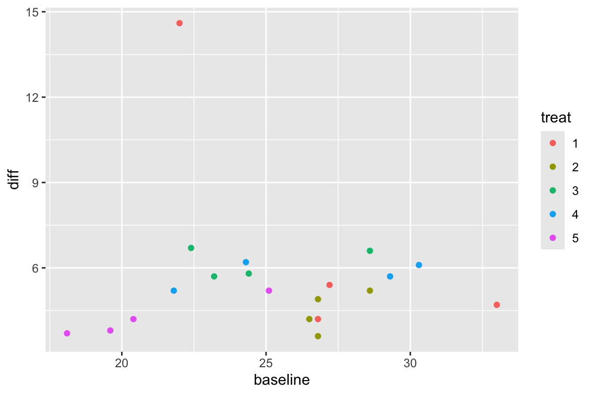

library(tidyverse)
library(kableExtra)
library(ggplot2)
library(here)
library(car)
library(agricolae)6 공분산분석
6.1 필요한 패키지
6.2 공분산분석 개요
서로 다른 집단을 비교하는 실험이나 관측연구에서 관심이 있는 처리(treatment)나 요인(factor)뿐만 아니라 다른 예측변수들도 반응변수에 영향을 미친다. 이러한 예측변수들의 영향을 제거하기 위한 방법은 여러가지가 있지만 실험인 경우 임의화 방법(randomization)으로 그 영향을 상쇄시킬 수 도 있고 관측연구인 경우에는 사례-대조연구 방법을 이용하여 그 영향을 최소화하려고 노력을 한다.
하지만 많은 경우에 여러 가지 변수들이 반응변수에 영향을 미친다. 이러한 경우에 이러한 독립변수(또는 예측변수)를 모형에 포함시켜서 그 영향을 반영하고 동시에 자료의 변동을 부가적으로 설명해주는 방법이 공분산 분석(analysis of covariance; ANCOVA)이다.
공분산 분석에서 고려되는 예측변수를 공변량(covariate) 이라고 부른다.
대부분의 실험연구에는 실험 전에 여러 가지 점수를 측정하는데 이 경우 이러한 점수를 공변량으로 모형에 포함시켜주는 것이 좋다 (예: 실험 전 상태에 대한 점수, 시험점수, IQ 점수). 또한 임상실험을 여러 개의 병원에서 진행하는 경우 병원 효과를 공변량으로 자주 사용한다.
공분산 모형의 주요한 장점은 반응변수에 대해 설명력이 높은 공변량을 사용하게 되면 잔차제곱합이 감소하여 처리의 효과에 대한 검정력을 높일 수 있다.
여기서 주의해야 할 점은 공변량과 처리는 독립이 되야한다는 점이다. 만약 처리의 결과가 공변량에 영향을 미치게 되면 이러한 공변량은 모형에 포함시키는 것이 부적절하다.
예를 들어 자동차정비 교육을 위한 두 가지 학습법을 비교하는 실험을 생각해 보자. 학생들을 임의로 두 가지 학습법 중 하나를 선택하여 3개월 동안 교육을 받게 하고 시험을 보아 평균 점수의 차이를 알아보았다. 이 떄 공변량으로 총 학습시간을 고려하였는데 학습법의 선택이 총 학습시간에 영향을 줄 수 있다. 즉 고려된 학습법 중 하나는 컴퓨터를 이용한 학습법이며 이 학습법에 배정된 학생들은 컴퓨터 사용를 익히는 시간까지 학습시간에 포함되는 것이 나타났다. 이렇게 공변량이 처리에 의해 영향을 받는 경우(교호작용이 있는 경우)는 이를 모형에 포함시키는 것은 위험하다.
6.3 공분산분석의 모형
이제 일원배치에서 하나의 공변량이 있는 공분산분석의 모형은 일원배치 모형에 공변량 \(x\)의 효과를 다음과 같이 더해주는 것이다.
\[ y_{ij} = \mu + \alpha_i + \beta(x_{ij} - \bar x_{..}) + e_{ij}, \quad i=1,2,\dots,a, ~~ j=1,2,\dots,r \tag{6.1}\]
모형 6.1 에서 \(x_{ij}\)는 관측값 \(y_{ij}\)의 공변량이며 \(\bar x_{..} = \sum_{i=1}^a \sum_{j=1}^r x_{ij}\)로 공변량의 전체 평균이다. 위의 효과모형은 다음과 같이 평균모형으로 나타낼 수 있다. 어떤 모형이든 모수에 대한 가설 검정의 결과는 동일하다.
\[ \begin{aligned} y_{ij} & = \mu + \alpha_i + \beta(x_{ij} - \bar x_{..}) + e_{ij} \\ & = \beta_0 + \alpha_i + \beta x_{ij} + e_{ij} \\ & = \beta_{0i} + \beta x_{ij} + e_{ij} \end{aligned} \]
모형 6.1 에서 각 모수의 추정은 ANOVA 모형에서와 같이 최소제곱법을 이용하여 추정하며 부가조건 \(\sum_i \alpha_i =0\) 을 이용하면 다음과 같은 추정량을 얻을 수 있다
\[ \begin{aligned} \hat \mu & = \bar y_{..} \\ \hat \alpha_i & =\bar y_{i.} - \bar y_{..} -\hat \beta(\bar x_{i.} -\bar x_{..}) \\ \hat \beta & = \frac{ \sum_i \sum_j (x_{ij} - \bar x_{i.})(y_{ij}-\bar y_{i.})}{\sum_i \sum_j (x_{ij} - \bar x_{i.})^2} \end{aligned} \]
각 집단의 차이와 공변량의 기울기에 대한 통계적 가설 검정에 관심이 있는 경우 공분산분석은 다음과 같이 공변량의 평균으로 보정하지 않는 모형을 사용해도 무방하다.
\[ y_{ij} = \mu + \alpha_i + \beta x_{ij} + e_{ij}, \quad i=1,2,\dots,a, ~~ j=1,2,\dots,r \tag{6.2}\]
6.4 가설검정
공분산 분석 모형에서는 다음과 같은 두 가지 가설을 검정할 수 있다. 분산 분석 모형에서와 같이 각 그룹의 평균에 대한 검정을 할 수 있고
\[ H_0: \alpha_1 = \alpha_2 =...=\alpha_a =0 \quad \text{vesus} \quad H_1: \text{ not } H_0 \]
또한 공변량의 효과에 대한 검정도 할 수 있다.
\[ H_0: \beta =0 \quad \text{vesus} \quad H_1: \beta \ne 0 \tag{6.3}\]
가설검정을 위한 제곱합들을 다음과 같이 정의하자.
\[ \begin{aligned} S_{xx(i)} & = \sum_{j=1}^r (x_{ij} - \bar x_{i.})^2 \\ S_{yy(i)} & = \sum_{j=1}^r (y_{ij} - \bar y_{i.})^2 \\ S_{xy(i)} & = \sum_{j=1}^r (x_{ij} - \bar x_{i.})(y_{ij} - \bar y_{i.}) \\ S_{xx} & = \sum_{i=1}^a \sum_{j=1}^r (x_{ij} - \bar x)^2 \\ S_{yy} & = \sum_{i=1}^a \sum_{j=1}^r (y_{ij} - \bar y)^2 \\ S_{xy} & = \sum_{i=1}^a \sum_{j=1}^r (x_{ij} - \bar x)(y_{ij} - \bar y)\\ SST & = \sum_{i=1}^a \sum_{j=1}^r (y_{ij} - \bar y)^2 \\ SS_T & = \frac{(S_{xx})(S_{yy}) -(S_{xy})^2}{S_{xx}} -SSE \\ SS_X & = \sum_{i=1}^a S_{yy(i)} -SSE \\ SSE & = \frac{(\sum_i S_{xx(i)})(\sum_i S_{yy(i)})-(\sum_i S_{xy(i)})^2}{\sum_i S_{xx(i)}} \end{aligned} \]
이제 위의 두 검정은 다음과 같은 분산분석표를 이용한 F-검정법으로 수행할 수 있다. \(n=ar\)으로 총 관측값의 개수이다.
| 요인 | 제곱합 | 자유도 | 평균제곱합 | F |
|---|---|---|---|---|
| 공변량 | \(SS_X\) | 1 | \(MS_X = SS_X/1\) | \(F_1 = MS_X / MSE\) |
| 처리 | \(SS_T\) | a-1 | \(MS_T = SS_T/(a-1)\) | \(F_2 = MS_T / MSE\) |
| 오차 | \(SSE\) | n-a-1 | \(MSE = SSE/(n-a-1)\) | |
| 총합 | \(SST\) | n-1 |
위의 분산분석표에서 공변량 효과에 대한 가설 6.3 은 다음과 같이 p-값을 계산하여 검정할 수 있다.
\[ p-value = P[ F(1, n-a-1) > F_1 ] \]
또한 그룹의 평균에 대한 검정은 ANOVA 검정과 유사하게 p-값을 계산하여 검정할 수 있다.
\[ p-value = P[ F(a-1, n-a-1) > F_2 ] \]
위의 두 F-검정에 쓰이는 F-분포의 두 번째 자유도가 ANOVA 검정에서 사용되는 자유도(\(n-a\))보다 하나가 작음(\(n-a-1\))을 유의하자.
6.4.1 최소제곱평균과 각 평균의 비교
공분산 분석 모형 6.1 에서 각 처리에 대한 평균을 구할 때 공변량의 값에 따라서 그 값이 변한다. 따라서 각 그룹의 평균을 비교하는 경우에는 모형의 공변량에 공변량의 전체 평균을 넣어 사용한다. 이러한 평균을 보정된 최소제곱평균(Least Square Mean)이라고 한다
\[ \bar y_i = \hat \mu + \hat \alpha_i + \hat \beta \bar x_{..} \]
또한 그룹의 평균들을 각각 비교할 수 있다.
\[ H_0: \alpha_i =\alpha_j \quad \text{ vs. } \quad H_1:\alpha_i \ne \alpha_j \]
6.5 예제: 저혈당 실험
앞에서 살펴본 예제 섹션 5.9 의 저혈당 임상실험에서는 혈당을 감소시키기 위한 다섯 개의 처리(treat)를 비교 하려고 한다. 반응 변수 response 는 치료 적용 1달 후 혈당량 수치이며 각 처리그룹에 대한 자료와 상자그림은 다음과 같다.
diabetes <- read.csv(here("data", "chapter-5-data.txt"), sep='', header = F)
diabetes <- read.csv(here("data", "chapter-5-data.txt"), sep='', header = F)
colnames(diabetes) <- c("treat", "baseline", "response")
diabetes$treat<- factor(diabetes$treat)
diabetes <- diabetes %>% arrange(treat)
dfsumm <- diabetes %>% group_by(treat) %>% summarise(mean=mean(response), median= median(response), sd=sd(response), min=min(response), max=max(response))
ggplot(diabetes, aes(treat, response)) +
geom_boxplot() +
geom_line(data=dfsumm, aes(x=treat, y=mean, group=1), linewidth=1.5, col="#9ACBF9") +
geom_point(data=dfsumm, aes(x=treat, y=mean), col="darkblue") +
theme_bw()대부분의 임상실험에서는 치료를 시작하기 전에 반응변수의 값을 먼저 측정하고 치료 후의 변화를 본다. 치료를 시작하기 전에 반응변수의 값을 기준값(baseline value) 라고 한다. 기준값은 환자의 치료 전 상태를 나타내는 중요한 변수이며 반응값에 영향을 미칠 수 있으므로 대부분의 임상실험에서는 기준값을 공변량으로 분석에 포함한다. 저혈당 실험의 공변량 \(x\) 는 치료 전 측정한 혈당량 수치(baseline)이다.
이러한 기준값의 분포가 각 처리집단 별로 크게 다르면 실험의 공정성에 문제가 생긴다.
이제 치료 전 측정한 혈당량의 분포를 처리 집단별로 살펴보자. 아래 그림에서 보면 치료잡단별로 치료 전 측정한 혈당량의 분포가 다르다는 것을 알 수 있다.
ggplot(diabetes, aes(treat, baseline)) +
geom_boxplot() +
theme_bw()
이제 치료 전 측정한 혈당량과 치료 후의 혈당량의 관계는 다음과 같은 산점도로 나타낼 수 있으며 강한 양의 선형관계가 있다는 것을 알 수 있다.즉 초기 형당량 수치가 크면 1달 후 혈당량 수치도 평균적으로 크다.
ggplot(diabetes, aes(baseline, response))+geom_point(aes(colour = treat))ggplot(diabetes, aes(baseline, response))+geom_point(aes(colour = treat)) +
facet_wrap("treat")이제 공변량을 사용하지 않는 분산분석 모형을 적합해 보자. 처리 간에 혈당의 평균은 유의한 차이가 없다.
diab1 <- lm(response~treat, data=diabetes )
summary(diab1)
Call:
lm(formula = response ~ treat, data = diabetes)
Residuals:
Min 1Q Median 3Q Max
-5.225 -1.781 -0.800 2.306 5.275
Coefficients:
Estimate Std. Error t value Pr(>|t|)
(Intercept) 34.475 1.634 21.094 1.46e-12 ***
treat2 -2.825 2.311 -1.222 0.240469
treat3 -3.625 2.311 -1.568 0.137642
treat4 -2.250 2.311 -0.973 0.345753
treat5 -9.450 2.311 -4.089 0.000968 ***
---
Signif. codes: 0 '***' 0.001 '**' 0.01 '*' 0.05 '.' 0.1 ' ' 1
Residual standard error: 3.269 on 15 degrees of freedom
Multiple R-squared: 0.5532, Adjusted R-squared: 0.434
F-statistic: 4.643 on 4 and 15 DF, p-value: 0.01224anova(diab1)Analysis of Variance Table
Response: response
Df Sum Sq Mean Sq F value Pr(>F)
treat 4 198.41 49.602 4.6425 0.01224 *
Residuals 15 160.26 10.684
---
Signif. codes: 0 '***' 0.001 '**' 0.01 '*' 0.05 '.' 0.1 ' ' 1다음으로 치료 전의 혈당을 공변량으로 포함한 공분석 결과를 적합해 보자.
주의
우리가 지금까지 사용한 anova() 함수를 이용하면 소위 Type I 제곱합(type I sum of squares)을 이용한 분산분석을 제공한다.
모형이 두 개 이상의 요인을 가지는 경우에 분산분석을 적용하는 경우 anova() 함수의 Type I 제곱합은 고려하는 요인의 순서에 따라서 제곱합의 값이 달라지기 때문에 우리가 원하는 검정을 실시할 수 없다.
모형이 두 개 이상의 요인을 가지는 경우는 패키지 car 의 Anova() 함수를 이용해야 하며, 선택문으로 type="III" 를 사용해야 한다. 이렇게 선택문 type="III" 으로 Anova() 함수를 이용해야만 요인의 순서에 관계없이 각 요인의 순수 효과만을 이용하여 가설 검정을 할 수 있다.
요인이 하나인 경우는 요인의 순서에 상관이 없으므로 anova() 함수를 사용해도 무방하다.
diab2 <- lm(response~ baseline + treat, data=diabetes )
summary(diab2)
Call:
lm(formula = response ~ baseline + treat, data = diabetes)
Residuals:
Min 1Q Median 3Q Max
-3.1360 -1.0024 -0.2827 0.7257 6.0806
Coefficients:
Estimate Std. Error t value Pr(>|t|)
(Intercept) 13.9437 4.8219 2.892 0.011834 *
baseline 0.7534 0.1723 4.373 0.000637 ***
treat2 -2.7685 1.5554 -1.780 0.096793 .
treat3 -1.6660 1.6186 -1.029 0.320776
treat4 -1.6284 1.5618 -1.043 0.314787
treat5 -4.5903 1.9115 -2.401 0.030788 *
---
Signif. codes: 0 '***' 0.001 '**' 0.01 '*' 0.05 '.' 0.1 ' ' 1
Residual standard error: 2.2 on 14 degrees of freedom
Multiple R-squared: 0.8112, Adjusted R-squared: 0.7437
F-statistic: 12.03 on 5 and 14 DF, p-value: 0.0001164Anova(diab2, type="III")Anova Table (Type III tests)
Response: response
Sum Sq Df F value Pr(>F)
(Intercept) 40.457 1 8.3621 0.0118339 *
baseline 92.528 1 19.1248 0.0006369 ***
treat 34.188 4 1.7666 0.1916720
Residuals 67.734 14
---
Signif. codes: 0 '***' 0.001 '**' 0.01 '*' 0.05 '.' 0.1 ' ' 1분산분석 모형에서는 평균 잔차제곱합이 \(MSE=10.684\) 이지만 공분산분석에서는 \(MSE=67.734 / 14 = 4.838\) 로 감소하였다.
하지만 치료약의 효과를 보면 공분산분석에서는 유의하지 않게 나타났다. 이는 공변량인 치료 전의 혈당이 치료 후의 혈당을 설명하는데 매우 유의한 요인이기 떄문이다. 즉 치료 후의 혈당의 집단별 변동이 큰 이유는 치료 효과때문이 아니라 치료 전의 혈당의 차이 때문으로 보여진다.
이러한 결과의 교훈은 여러 개의 집단을 비교하는 경우, 처리를 배정할 때 임의화 방법(randomization)을 사용하여 실험 전 환자들의 인구적 특성과 증상의 정도가 처리그룹간에 큰 차이가 없이 만들어야 한다. 우리가 살펴본 저혈당 임상실험은 처리를 비교하기 위한 공정한 실험이라고 보기 힘들다.
마지막으로 분석에 사용하는 반응변수를 치료 후 반응값이 아닌 기준값에서의 변화량(change from baseline) 으로 사용할 수 있다.
이제 다음과 치료 전과 후의 변화량을 반응변수로 하고 공분산분석을 적용해보자.
diabetes2 <- diabetes %>% dplyr::mutate(diff = response - baseline)
ggplot(diabetes2, aes(baseline, diff)) +
geom_point(aes(colour = treat))
diab3 <- lm(diff~ baseline + treat, data=diabetes2 )
summary(diab3)
Call:
lm(formula = diff ~ baseline + treat, data = diabetes2)
Residuals:
Min 1Q Median 3Q Max
-3.1360 -1.0024 -0.2827 0.7257 6.0806
Coefficients:
Estimate Std. Error t value Pr(>|t|)
(Intercept) 13.9437 4.8219 2.892 0.0118 *
baseline -0.2466 0.1723 -1.431 0.1743
treat2 -2.7685 1.5554 -1.780 0.0968 .
treat3 -1.6660 1.6186 -1.029 0.3208
treat4 -1.6284 1.5618 -1.043 0.3148
treat5 -4.5903 1.9115 -2.401 0.0308 *
---
Signif. codes: 0 '***' 0.001 '**' 0.01 '*' 0.05 '.' 0.1 ' ' 1
Residual standard error: 2.2 on 14 degrees of freedom
Multiple R-squared: 0.3387, Adjusted R-squared: 0.1025
F-statistic: 1.434 on 5 and 14 DF, p-value: 0.2723Anova(diab3, type="III")Anova Table (Type III tests)
Response: diff
Sum Sq Df F value Pr(>F)
(Intercept) 40.457 1 8.3621 0.01183 *
baseline 9.908 1 2.0480 0.17435
treat 34.188 4 1.7666 0.19167
Residuals 67.734 14
---
Signif. codes: 0 '***' 0.001 '**' 0.01 '*' 0.05 '.' 0.1 ' ' 1위의 분석을 보면 변화량을 반응변수로 하면 기준값과 처리 모두 유의하지 않음을 알 수 있다.
6.6 예제: 산소운반능력
부교재 Jaewon Lee (2005) 의 5장에 나오는 산소운반 능력에 대한 실험 자료를 분석해 보자.
흡연자를 대상으로 산소운반 능력을 개선하는 서로 다른 치료제의 효과를 비교하는 실험이다. 산소운반 능력에 영향을 미치는 중요한 변수로 1인당 담배소비량이 고려되어 이를 공변량으로 포함하여 공분산분석을 실시하려고 한다.
다음과 같이 자료를 읽으며 변수의 설명은 다음과 같다.
treat: 치료법cigar: 1인당 담배 소비량oxy: 산소운반능력
oxygen <- read.csv(here("data","chapter-5-data-2.txt"), sep='', header = T)
oxygen$treat<- factor(oxygen$treat)
oxygen <- oxygen %>% dplyr::rename(cigar = x, oxy = y)산소운반능력에 대한 임상실험에서 얻은 자료는 다음과 같다.
oxygen %>%
kbl(caption = "산소운반능력 임상실험 결과") %>%
kable_styling(bootstrap_options = "striped", full_width = F, position = "center",
font_size = 12)| treat | cigar | oxy |
|---|---|---|
| 1 | 40 | 165 |
| 1 | 54 | 85 |
| 1 | 85 | 9 |
| 1 | 95 | 43 |
| 1 | 81 | 94 |
| 1 | 26 | 226 |
| 1 | 90 | 7 |
| 1 | 95 | 9 |
| 1 | 83 | 12 |
| 1 | 83 | 145 |
| 2 | 85 | 11 |
| 2 | 83 | 6 |
| 2 | 65 | 51 |
| 2 | 98 | 18 |
| 2 | 47 | 189 |
| 2 | 74 | 90 |
| 2 | 75 | 10 |
| 2 | 97 | 12 |
| 2 | 79 | 35 |
| 2 | 91 | 27 |
| 3 | 65 | 89 |
| 3 | 25 | 64 |
| 3 | 34 | 87 |
| 3 | 20 | 45 |
| 3 | 30 | 56 |
| 3 | 29 | 87 |
| 3 | 100 | 59 |
| 3 | 85 | 39 |
| 3 | 24 | 87 |
| 3 | 26 | 67 |
치료집단 별로 치료 후 산소운반능력의 분포를 다음과 상자그림으로 비교해보자.
dfsumm2 <- oxygen %>%
group_by(treat) %>%
summarise(mean = mean(oxy), median = median(oxy), sd = sd(oxy), min = min(oxy),
max = max(oxy))
dfsumm2# A tibble: 3 × 6
treat mean median sd min max
<fct> <dbl> <dbl> <dbl> <int> <int>
1 1 79.5 64 77.7 7 226
2 2 44.9 22.5 56.7 6 189
3 3 68 65.5 18.7 39 89ggplot(oxygen, aes(treat, oxy)) +
geom_boxplot() +
geom_line(data=dfsumm2, aes(x=treat, y=mean, group=1), linewidth=1.5, col="#9ACBF9") +
geom_point(data=dfsumm2, aes(x=treat, y=mean), col="darkblue") +
theme_bw()이제 1인당 담배소비량과 산소운반 능력의 관계는 다음과 같은 산점도로 나타낼 수 있다.
ggplot(oxygen, aes(cigar, oxy))+
geom_point(aes(colour = treat))1인당 담배소비량과 산소운반 능력의 관계를 상관계수로 구해보면 음의 상관관계를 보이고 있으면 1인당 담배소비량이 증가하면 산소운반 능력이 감소하는 것을 알 수 있다.
cor(oxygen$cigar, oxygen$oxy)[1] -0.5349395이제 조금 더 자세하고 처리 그룹별로 산소운반 능력과 1인당 담배소비량의 관계를 살펴보자. 아래 그름을 보면 산소운반 능력과 1인당 담배소비량의 관계가 처리 그룹별로 다르게 나타나는 것을 알 수 있다. 처리 그룹 1 과 2에서는 1인당 담배소비량이 증가하면 산소운반 능력이 감소하는 것을 알 수 있지만 처리 그룹 3에서는 그렇지 않다.
ggplot(oxygen, aes(cigar, oxy)) +
geom_point(aes(colour = treat)) +
facet_wrap("treat")이제 공변량을 사용하지 않는 분산분석 모형을 적합해 보자. 다음 결과를 보면 처리 간에 산소운반 능력이 유의한 차이가 없다.
oxy1 <- lm(oxy~treat, data=oxygen )
anova(oxy1)Analysis of Variance Table
Response: oxy
Df Sum Sq Mean Sq F value Pr(>F)
treat 2 6210 3105.0 0.9696 0.3921
Residuals 27 86465 3202.4 다음으로 1인당 담배소비량을 공변량으로 포함한 공분석 결과를 적합해 보자.
oxy2 <- lm(oxy ~ treat + cigar, data=oxygen )
summary(oxy2)
Call:
lm(formula = oxy ~ treat + cigar, data = oxygen)
Residuals:
Min 1Q Median 3Q Max
-57.974 -32.116 -8.566 30.148 96.489
Coefficients:
Estimate Std. Error t value Pr(>|t|)
(Intercept) 187.0662 30.9742 6.039 2.22e-06 ***
treat2 -25.4892 20.5656 -1.239 0.226266
treat3 -54.7028 23.2087 -2.357 0.026234 *
cigar -1.4695 0.3743 -3.926 0.000567 ***
---
Signif. codes: 0 '***' 0.001 '**' 0.01 '*' 0.05 '.' 0.1 ' ' 1
Residual standard error: 45.69 on 26 degrees of freedom
Multiple R-squared: 0.4143, Adjusted R-squared: 0.3467
F-statistic: 6.13 on 3 and 26 DF, p-value: 0.002697Anova(oxy2, type="III")Anova Table (Type III tests)
Response: oxy
Sum Sq Df F value Pr(>F)
(Intercept) 76152 1 36.4746 2.224e-06 ***
treat 11873 2 2.8433 0.0764293 .
cigar 32183 1 15.4146 0.0005667 ***
Residuals 54283 26
---
Signif. codes: 0 '***' 0.001 '**' 0.01 '*' 0.05 '.' 0.1 ' ' 1위에서 공변량을 포함한 공분산분석 결과를 보면 담배소비량이 산소운반 능력을 설명하는 유의한 변수이며 음의 기울기를 나타내는 것을 알 수 있다.
처리 간에 산소운반 능력이 유의 수준 5% 로는 유의한 차이가 없다고 나타났지만 공변량이 없는 위의 모형보다 p-값이 크게 감소한것을 알 수 있다 .
유의할 점은 공변량이 없는 경우 모분산의 추정값인 평균 잔차제곱합이 \(MSE=3202.4\) 로 추정되고 공변량이 포함되면 \(MSE = 54283/26 = 2087.8\) 이다. 이는 1인당 담배소비량이 산소운반 능력을 설명하는 유의한 변수이기 떄문이다. 따라서 공변량이 포함된 모형에서 처리에 대한 \(F\)-검정통계량의 값이 커지는 결과가 나타난다.
이렇게 반응변수를 설명하는데 있어서 유의한 공변량을 포함시키면 일반적으로 처리에 대한 검정력이 높아진다.
1인당 담배소비량과 산소운반 능력의 관계가 각 그룹마다 차이가 있다면 공변량의 효과가 처리집단에 따라서 달라지는 다음 모형을 고려해 보자. 다음 모형에서 공변량에 대한 회귀 계수의 값이 처리집단마다 다른 것(\(\beta_1, \beta_2,\beta_3\))을 알 수 있다.
\[ y_{ij} = \mu + \alpha_i + \beta_i ~ x_{ij} + e_{ij}, \quad i=1,2,\dots,a, ~~ j=1,2,\dots,r \tag{6.4}\]
이제 식 6.4 를 이용하여 공분산 분석을 실행해 보자.
공변량의 효과가 처리 집단마다 다르게 놓은 모형 6.4 에서는 처리집단 간의 유의한 차이가 나타난다 (p-값 = 8.272e-05). 평균 잔차제곱합도 \(MSE = 29146/24= 1214.4\) 으로 줄어든 것을 알 수 있다.
oxy3 <- lm(oxy ~ treat + treat*cigar, data=oxygen )
summary(oxy3)
Call:
lm(formula = oxy ~ treat + treat * cigar, data = oxygen)
Residuals:
Min 1Q Median 3Q Max
-48.179 -25.812 -3.413 20.850 91.544
Coefficients:
Estimate Std. Error t value Pr(>|t|)
(Intercept) 274.0363 36.6575 7.476 1.03e-07 ***
treat2 10.4882 71.0085 0.148 0.883811
treat3 -198.4239 42.1708 -4.705 8.79e-05 ***
cigar -2.6576 0.4776 -5.564 1.00e-05 ***
treat2:cigar -0.3603 0.8919 -0.404 0.689783
treat3:cigar 2.4838 0.6256 3.970 0.000568 ***
---
Signif. codes: 0 '***' 0.001 '**' 0.01 '*' 0.05 '.' 0.1 ' ' 1
Residual standard error: 34.85 on 24 degrees of freedom
Multiple R-squared: 0.6855, Adjusted R-squared: 0.62
F-statistic: 10.46 on 5 and 24 DF, p-value: 2.031e-05Anova(oxy3, type="III")Anova Table (Type III tests)
Response: oxy
Sum Sq Df F value Pr(>F)
(Intercept) 67868 1 55.884 1.026e-07 ***
treat 34648 2 14.265 8.272e-05 ***
cigar 37600 1 30.961 1.004e-05 ***
treat:cigar 25137 2 10.349 0.0005742 ***
Residuals 29146 24
---
Signif. codes: 0 '***' 0.001 '**' 0.01 '*' 0.05 '.' 0.1 ' ' 1